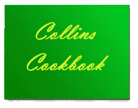

 INDEX
|
Category: Desserts |
|
| Chocolate Cherry Cake |
|
Ex Culina: Barbara Collins |
Ingredients:
1 package Pillsbury Fudge Cake mix
1 can pie cherries
2 eggs, beaten
1 teaspoon almond flavoring
1 cup sugar
5 tablespoons oleo
⅓ cup milk
6 ounces semi-sweet chocolate chips
Directions:
- Mix cake mix, cherries, eggs, and almond flavoring in a large bowl with a spoon until well mixed.
- Pour into greased pan.
- Bake per cake mix instructions.
- Combine remaining ingredients in a pan.
- Boil for 1 minute, stirring constantly.
- Pour over finished cake.